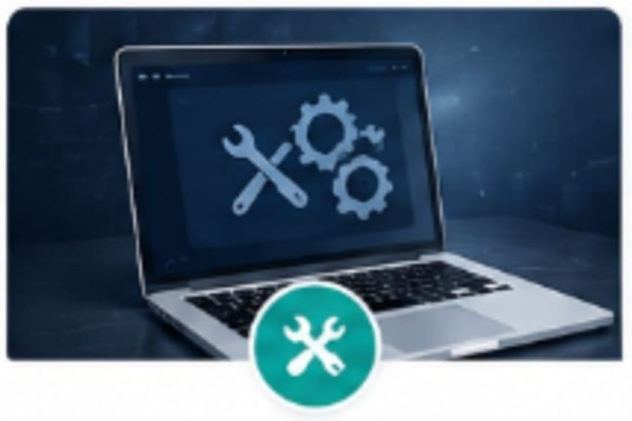

LTLS provides reliable website maintenance services to ensure your website remains secure, updated, and performs efficiently. Regular maintenance helps improve user experience, website security, and search engine rankings.
Security Patches, Database Optimization, Backup Management, Performance Monitoring, Content Management, Error Resolution
* Improved Website Performance
* Enhanced Security Protection
* Reduced Downtime
* Regular Data Backups
* Fast Technical Support
* Better User Experience
* Continuous Website Improvements